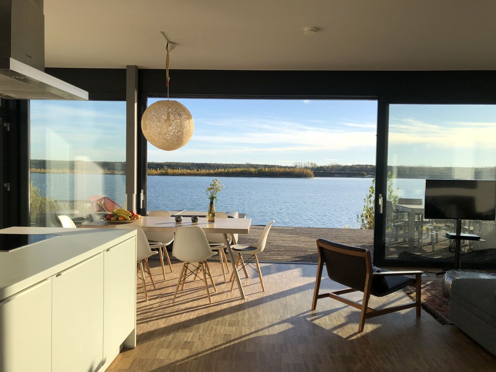
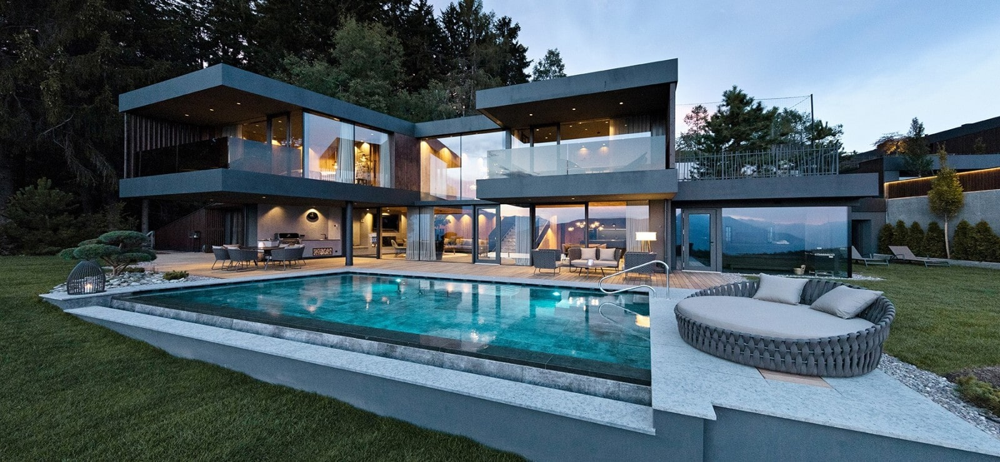
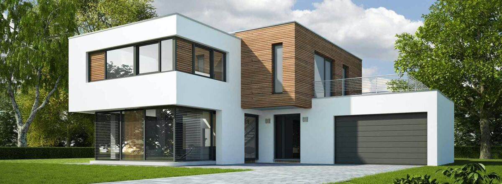
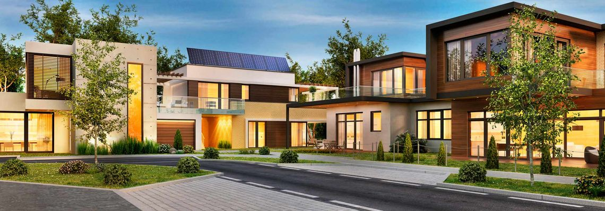
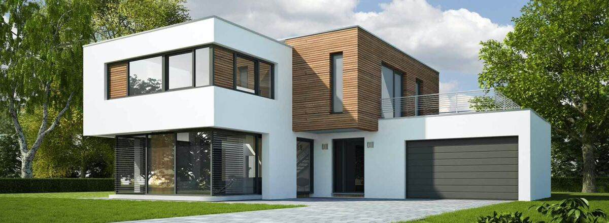
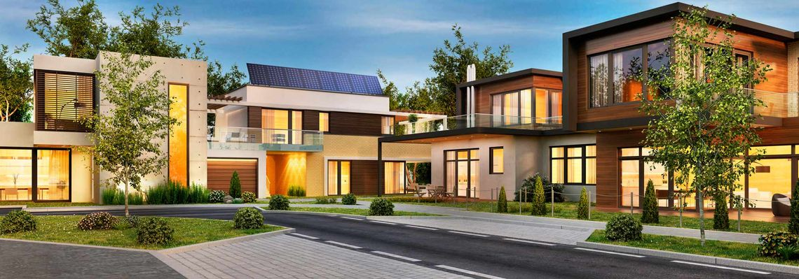

Wert von Immobilien
Vorwort
Die Bedürfnisse der Menschen sind individuell und man versucht, diese Faktoren den Käufern anzupassen. Wenn man über Wert einer Immobilie spricht, fällt sehr oft die Frage, wie die Lage der Immobilie sei. Man sagt es gäbe drei wichtige Kriterien für den Wert einer Immobilie: "Die Lage, die Lage und noch einmal die Lage." Den genauen Wert einer Immobilie aufgrund der Lage lässt sich jedoch auch schwierig sagen. Man kann hier eigentlich nur schätzen, da jeder Mensch individuelle Prioritäten hat. Es gibt jedoch viele Faktoren, die eine Rolle spielen. Ein durchschnittlich verdienender Mensch, der viel am Reisen ist, will vermutlich kein Einfamilienhaus mit Garten und Pool, da dieser nicht die gleichen Ansprüche wie eine Familie mit Kindern hat. All die folgenden Faktoren haben gewissen Einfluss auf den Wert der Immobilie und man versucht mit diesen Faktoren den Wert des Objektes für den Käufer/Mieter zu berechnen. Natürlich wird ein gewisser Grundwert bestehend sein doch dieser kann variieren.
Mikro- und Makrolage
Die Mikrolage durchleuchtet die direkte Umgebung der Immobilie. Wie steht es mit Nachbaren, was für eine Bevölkerungsgruppe lebt in dieser Gegend? Ist zum Beispiel die Bushaltestelle direkt vor der Türe? Eine Wohnung im Erdgeschoss ist eher unbeliebt für einige Leute, jedoch ist es für Familien mit einem Hund wiederum sehr attraktiv. Hingegen ist ein Balkon zur ruhigen Gartenseite eher auf der beliebteren Seite und wird vermutlich mehr Interessenten anlocken, die den Anspruch auf diese Sache haben. All das wird sich auf den Quadratmeterpreis auswirken. Neben der Mikrolage unterscheidet man noch die Makrolage, welche das ganze Grosse erfasst, also das Räumliche Umfeld im weiteren Sinne. Heisst, es kann die Region, der Stadtteil oder die ganze Stadt sein. Ebenfalls schaut die Makrolage Geschäfte und Ärzte in der Nähe an. Ebenfalls spielt der Weg zur Arbeit eine Rolle, ob dieser leicht zu erreichen und in der Nähe ist. Ein wichtiger Punkt ist somit die Infrastruktur. Der nächste Aspekt wäre dann die Wirtschaftskraft: Gibt es genügend Arbeitsplätze oder gibt es sogar eine grosse Arbeitslosenquote und ist der Standort attraktiv für Touristen oder Studenten?
Struktur und Kriterien bezüglich der Lage
Kriterien der Lage können strukturiert werden nach Topologie, Demographie und Geographie dann werden diese unterteilt. Je grösser die Nachfrage und je kleiner das Angebot, desto höher der Preis.
Demographische Lage
Die Demographische Lage beschreibt die Soziale Umgebung einer Immobilie. Es wird berücksichtigt welche Stellung die Nachbarn oder die Leute in der Nähe in der Gesellschaft haben, sind sie eher wohlhabend, oder aus der ärmeren Gesellschaftsschicht. Es werden alle Eigenschaften über die Personen im Umfeld berücksichtigt, heisst auch das Alter, das Geschlecht und wirklich alles was zu einer Person dazu gehören die Finanzen ebenfalls. Ebenfalls wird die Nationalität der Personen beachtet, eine grosse Immigrantenrate, kann ebenfalls einen Einfluss haben oder ein Immigrantenheim in der Gemeinde / Region. Auch wird auf die Entwicklung der Bevölkerung geschaut, Geburtsrate und Sterberate sind hier ein Beispiel.
Geographische Lage
Sie schaut auf die Umgebung der Immobilie. Wie ist die Landschaft rund um das Objekt? Ob die Umgebung dicht bebaut ist oder ob es viel Platz gibt rund um die Immobilie. Gibt es ein Gewässer in der Nähe, nahe am Zürichsee zum Beispiel sind Wohnungen sehr beliebt, da für viele Personen ein Seeblick ein essentieller Faktor ist.
Topographische Lage
Die Topographische Lage hat, wie der Name schon sagt, mit der Topographie um die Immobilie zu tun. Es wird auf die Höhenlage des Objektes geschaut, da der Ausblick eine grosse Rolle spielt und bei einem Höhenunterschied ein gewisser Anblick garantiert oder eben nicht garantiert ist.
 


